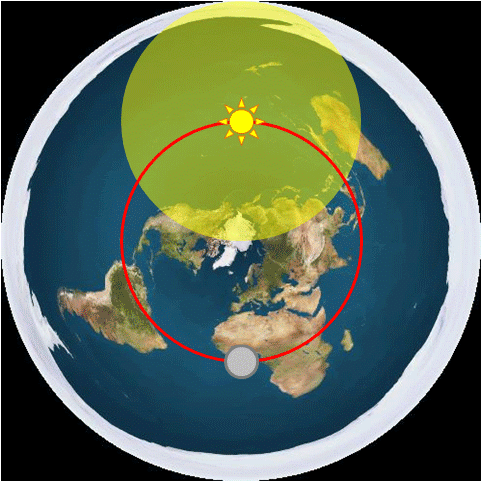

Une théorie du complot désigne un complot, qui selon une organisation ou un ensemble de personnes, est créé par les gouvernements et/ou sociétés afin de manipuler la population . Ces gouvernements et sociétés usent ouvertement du menson nous faire croire une réalité qui n'en est pas une.
Ces théories sont donc construites par une association d’idées, d'articles, et de preuves en tout genre ayant pour but de prouver que la réalité est différente de la croyance populaire, et de diffuser la vérité vraie à travers le monde.
Nous allons donc vous présenter ici la vérité concernant la Terre : Contrairement à ce que la NASA, les gouvernements, et l'enseignement veulent nous faire croire, il se trouve en fait que la Terre est en réalité un disque plat, et non une sphère, une boule dans l'espace comme ils essayent de nous l'apprendre depuis que nous sommes tout petit.
Nous pouvons voir ci-dessous une animation qui nous montre une vraie carte de la Terre, avec le Soleil et la Lune qui nous tournent autour
